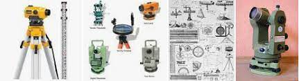

- Land surveying is the process of determining the precise location of boundaries
and features on a piece of land. This information is used to create maps and
legal documents that define property rights. Surveying involves using a variety of tools
and techniques, such as measuring distances with a tape measure or electronic
distance-measuring equipment, using angles and levels to determine elevation,
and using GPS to establish precise locations. Surveyors also study and interpret legal
documents, such as deeds and property descriptions, to determine the location of boundaries
and other features. They also work with architects, engineers, and builders
to ensure that construction projects are built according to plan.
Different types of Surveys
Boundary Surveys: These surveys determine the location of property boundaries and create
maps that show the location of buildings, roads, and other features on a piece of property.
Topographic Surveys: These surveys create detailed maps that show the contours
and elevations of the land, including natural features such as rivers and
streams, as well as man-made features such as roads and buildings.
Construction Surveys: These surveys are used during the construction process
to ensure that buildings, roads, and other structures are built according to plan.
They are also used to stake out the locations of foundations, utilities, and other structures.
Hydrographic Surveys: These surveys are used to map the features of bodies of water,
such as rivers, lakes, and oceans. They are used to determine the depth and shape of the water
body and the location of underwater features such as rocks and shipwrecks.
As-built Surveys: These surveys are used to create a detailed map of
an existing structure or site, such as a building or a roadway, after it
has been built. They are used to document the actual location and
dimensions of the structure or site, as well as any changes that
have been made since it was first built.
Subdivision Surveys: these surveys are used to divide a piece of land
into smaller plots, such as for real estate development. They include the layout
of streets, alleys, easements and other rights of way, and lot lines.
Control Surveys: These surveys are used to establish a stable coordinate system
for mapping and surveying a specific area. They are used to establish horizontal
and vertical control points that can be used as a reference for other surveys.
3D Laser Scanning Surveys: This type of survey uses lasers to scan a building
or structure and create a detailed 3D model of it. This can be used for
architectural design, engineering, construction and maintenance.
Different types of Survey tools
Total Station: It is a highly precise electronic instrument that combines an electronic
theodolite (an instrument used for measuring angles) with an electronic distance meter
(EDM) to measure distances and angles to determine the precise location of points.
GPS Receiver: It uses satellite signals to determine precise location and elevation
information.
Leveling Instrument: It is used to establish or verify points in a vertical plane, typically
used for construction, mining and civil engineering.
Dumpy Level: It is a simple, low-cost surveying instrument that can be used for leveling
and height measurement.
Theodolite:It is a precision instrument for measuring angles in the horizontal and vertical
planes, used for measuring angles and distances.
Transit:It is similar to a theodolite, but also has a built-in compass to measure azimuths.
Prism Pole: It is a tall, thin pole with a small, triangular prism on top that reflects a laser
beam back to the instrument.the field.
Surveyor's tape: It is a long measuring tape used to measure distances between points in
beam back to the instrument.
Stake or pegs:are used to mark the location of points in the field.
Handheld computer or tablet with survey software
Aerial drone equipped with cameras and sensors for surveying large areas or hard-to-reach places.

Who makes up a survey team?
Surveyor: These are the professionals who conduct the actual surveys and collect data.
They use a variety of tools and techniques, such as measuring distances with a tape measure
or electronic distance-measuring equipment, using angles and levels to determine elevation,
and using GPS to establish precise locations.
Party Chief/Crew: This is the person who is in charge of a field survey crew, who is responsible
for the field data collection and the safety of the crew.
CAD Technician: These professionals use computer-aided design (CAD) software to create maps, plans,
and other detailed drawings. They take the data collected by the surveyors and turn it into a visual representation.
Office Manager: This person is responsible for the day-to-day operations of the surveying firm,
such as managing finances, overseeing staff, and handling administrative tasks.
Project Manager: This person is responsible for overseeing the entire surveying project,
from start to finish. They work with clients to understand their needs, develop project plans,
and ensure that projects are completed on time and within budget.
Salesperson: This person is responsible for promoting the surveying firm and
its services to potential clients and building relationships with existing clients.
GIS Specialist: This person uses Geographic Information Systems (GIS) to analyze
and manage spatial data, creating maps and visualizations for clients.
Geodetic Surveyor: This type of surveyor uses advanced techniques, such as satellite positioning and
gravity measurements, to measure and map the earth's surface and the shape of the earth.
Survey's long historical History
- The history of land surveying dates back to ancient civilizations, where it was used for the
measurement and mapping of land for agricultural and construction purposes. In ancient
Egypt, for example, land surveying was used to create precise maps of the Nile River
floodplain to ensure fair distribution of fertile land among farmers. In ancient Rome, land
surveyors were responsible for dividing land among citizens and measuring land for taxation purposes.
- During the Middle Ages, land surveying was primarily used for military and architectural
purposes. In the 18th and 19th centuries, the field of land surveying advanced significantly
with the development of new technologies and instruments, such as the theodolite and
transit.
- Today, land surveying is a highly specialized field that uses a combination of traditional
techniques and modern technology to measure, map, and analyze land and natural
resources. This includes everything from topographic mapping and boundary determination
to the construction of large infrastructure projects such as roads, bridges, and buildings.